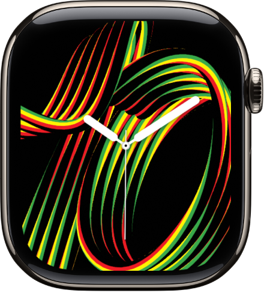

此表盘包含由红色、绿色和黄色线条交织而成的自定义数字。
下方的文件数包括本地化资源。固件名称键能确认包的归属；组件的圆屏点击边界、亮屏过渡与 AOD 对照均待设备验证。
原始包 已解析属性表 Mach-O 方法与成员 ARM64 汇编 解出的图集 解出的纹理和场景
.strings × 88 .usdc × 24 .metallib × 2 .plist × 2 .car × 1 无扩展名 × 1
原始包 已解析属性表 Mach-O 方法与成员 ARM64 汇编 解出的图集 解出的纹理和场景
.strings × 88 .usdc × 24 .metallib × 2 .plist × 2 .car × 1 无扩展名 × 1
原始包 已解析属性表 Mach-O 方法与成员 ARM64 汇编 解出的图集 解出的纹理和场景
.strings × 88 .usdc × 24 .metallib × 2 .plist × 2 .car × 1 无扩展名 × 1
NTKUnity2025FaceBundle.bundleUNITY2025_FACE_NAME_DESCRIPTIONcolorway0colorway4colorway1colorway5colorway2colorway3色组与设备条件 Unity2025.color.plist 共享色组与默认值
-[NTKUnity2025FaceView tritium_didTransitionToTritiumOn];-[NTKUnity2025FaceView tritium_didTransitionToTritiumOff];-[NTKUnity2025FaceView tritium_createFaceAnimator];-[NTKUnity2025FaceView tritium_alwaysOnTimelines];-[NTKUnity2025FaceView tritium_transitionToFrameSpecifier:];-[NTKUnity2025FaceView tritium_willTransitionToTritiumOnToFrameSpecifier:];-[NTKUnity2025FaceView tritium_willTransitionToTritiumOffFromFrameSpecifier:];-[NTKUnity2025Quad tritiumProgress];-[NTKUnity2025Quad setTritiumProgress:];-[NTKUnity2025FaceView tritium_didTransitionToTritiumOn];-[NTKUnity2025FaceView tritium_didTransitionToTritiumOff];-[NTKUnity2025FaceView _applyTransitionFraction:fromOption:toOption:forCustomEditMode:slot:];-[NTKUnity2025FaceView tritium_createFaceAnimator];-[NTKUnity2025FaceView tritium_alwaysOnTimelines];-[NTKUnity2025FaceView tritium_transitionToFrameSpecifier:];-[NTKUnity2025FaceView _configureForTransitionFraction:fromEditMode:toEditMode:];-[NTKUnity2025FaceView setOverrideDate:duration:];-[NTKUnity2025FaceView tritium_willTransitionToTritiumOnToFrameSpecifier:];-[NTKUnity2025FaceView tritium_willTransitionToTritiumOffFromFrameSpecifier:];-[NTKUnity2025Quad setOverrideDate:duration:];-[NTKUnity2025ColorPalette swatchImageForSize:];+[NTKUnity2025Face _complicationSlotDescriptors];+[NTKUnity2025Face _richComplicationSlotsForDevice:];+[NTKUnity2025Face _orderedComplicationSlots];-[NTKUnity2025Face _localizedNameForComplicationSlot:];-[NTKUnity2025Face _numberOfOptionsForCustomEditMode:slot:];-[NTKUnity2025Face _defaultOptionForCustomEditMode:slot:];-[NTKUnity2025Face _indexOfOption:forCustomEditMode:slot:];-[NTKUnity2025Face _optionAtIndex:forCustomEditMode:slot:];-[NTKUnity2025FaceView _homeScreenBackgroundColor];-[NTKUnity2025FaceView createFaceColorPalette];-[NTKUnity2025FaceView _applyTransitionFraction:fromOption:toOption:forCustomEditMode:slot:];-[NTKUnity2025FaceView _applyBreathingFraction:forCustomEditMode:slot:];-[NTKUnity2025FaceView _applyOption:forCustomEditMode:slot:];-[NTKUnity2025FaceView _cleanupAfterEditing];-[NTKUnity2025FaceView _configureComplicationView:forSlot:];-[NTKUnity2025FaceView colorPalette];-[NTKUnity2025FaceView _applyRubberBandingFraction:forCustomEditMode:slot:];-[NTKUnity2025FaceView _forceUpdateComplicationColor];-[NTKUnity2025MiniClockView layoutSubviews];-[NTKUnity2025Quad complicationForegroundColor];-[NTKUnity2025Quad backgroundColor];-[NTKUnity2025Quad morphBetweenColorways:index1:index2:];